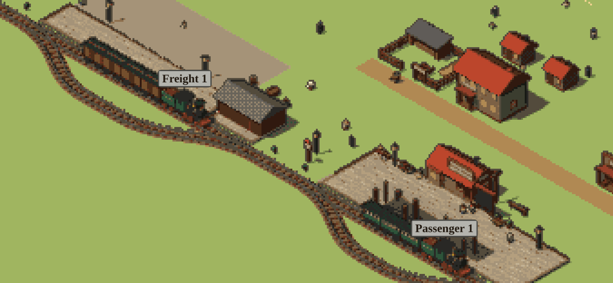
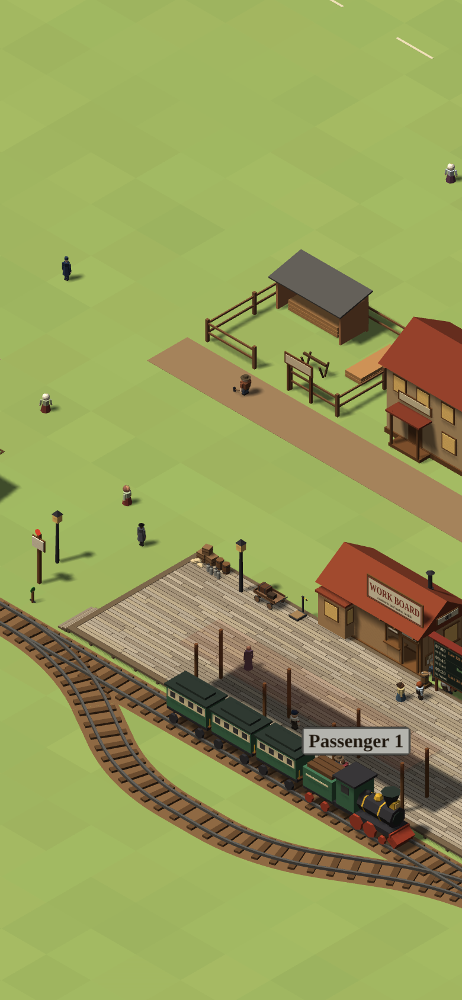
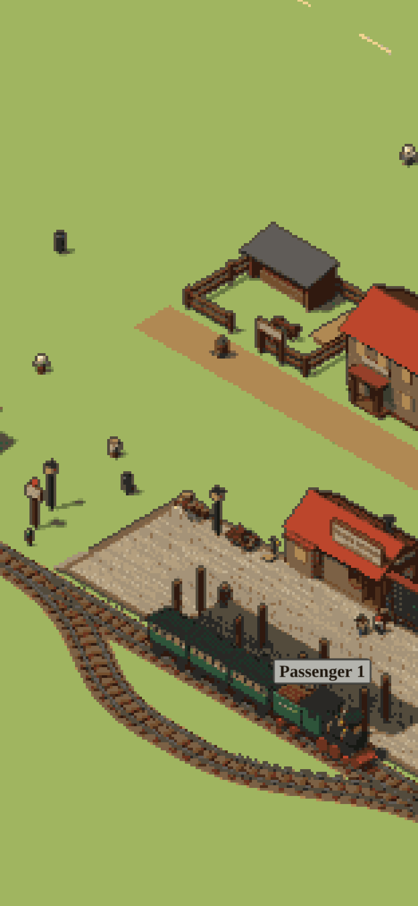
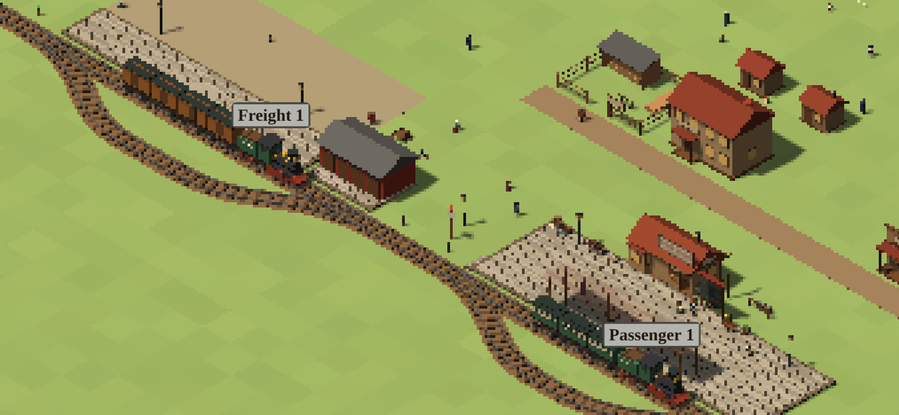
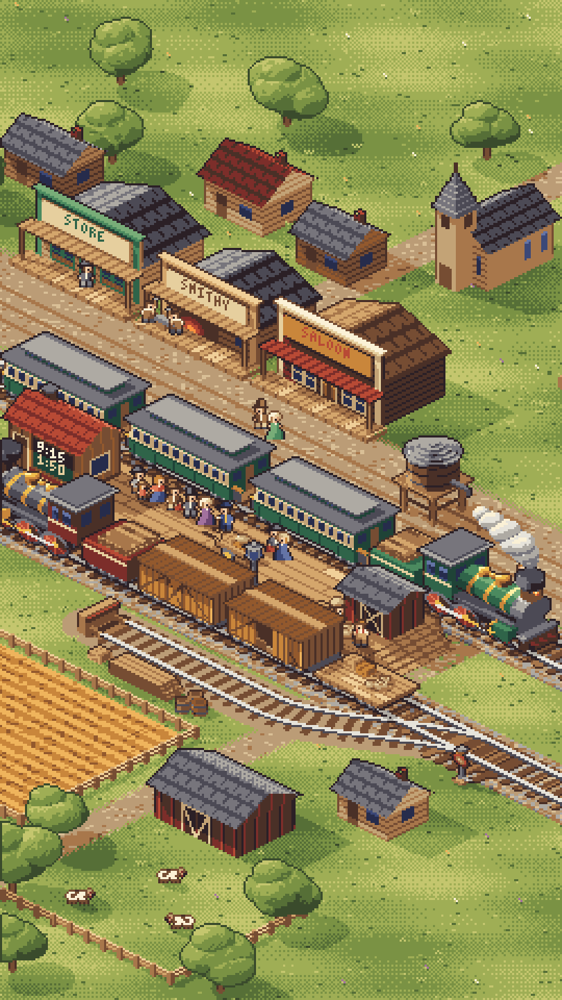
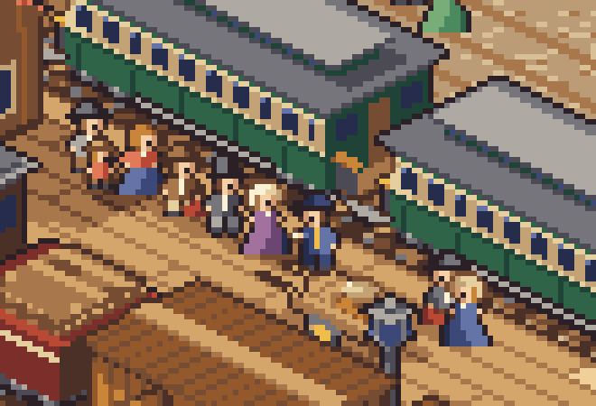

Two ways to give Railhead a pixel look, next to the game as it is now. Nothing in the game has changed: these are pictures made on the side.
1. The 3D game with a pixel look
The game we have, drawn small and blown up into chunky square pixels, with 32 warm colours, a light dot pattern and dark outlines. This is real: it runs inside a copy of the game, so trains move and you can play it like this.
Now: the game as it is today (landscape)

Pixel look: the same moment

Now (portrait)

Pixel look (portrait)

Plain version: chunky pixels only, no colour or outline treatment
Work: small, about 150 to 250 lines, a setting you could turn on and off. Everything else in the game stays the same, including the camera turning and zooming.
Speed: no cost; it is actually cheaper on a phone, because fewer pixels are drawn.
Weak spots: trains in shadow go very dark; freight cars come out brown rather than orange; signs and the schedule board turn into blobs (they would need a pixel font drawn on top); thin things like rails shimmer a little while the view moves. All fixable with tuning.
2. Real, detailed pixel art (one fixed view)
The prototype's station drawn pixel by pixel: the passenger train with travellers lined up and the agent punching a ticket, the freight train being unloaded, the switch stand, the storage shed, and the general store, smithy and saloon behind.

Full scene, as a phone would show it

Close-up: the line of travellers and the agent
Work: large. The drawing side of the game would be rebuilt as flat pictures (sprites) instead of 3D models; the rules (trains, switches, tickets, goods) would stay. Each train car, engine and person needs pictures for every direction it can face and every step of its walk or wheel turn. For the whole game that is roughly 1,500 to 2,500 pictures; for the small prototype station far fewer, perhaps a few hundred, because the track is fixed.
How: the mockup was made by a program that builds each picture from simple 3D shapes and snaps every pixel to the palette, so the pictures can be made by code and then touched up, not drawn one by one by hand.
What gets harder: curved track has to use a few fixed angles; trains rounding a curve jump between angles; deciding what is in front of what (a person walking behind a train) has to be worked out by hand; zoom only in steps (2x, 3x, 4x); the camera can no longer turn, so things behind a train or building are hidden (the freight door on the far side is a real example).
What gets easier: it can look exactly as designed, with charm the 3D look cannot match.